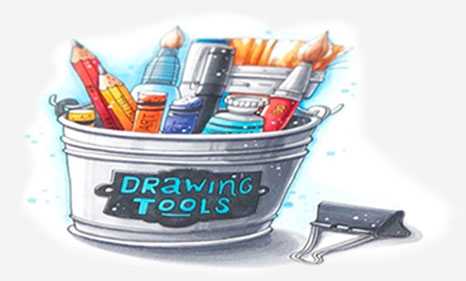
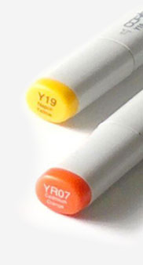
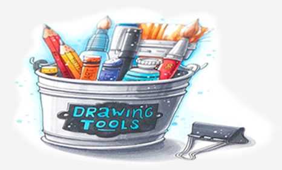
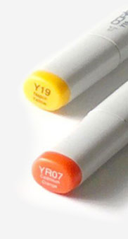

1. Теория. Знакомство с материалом
Узнаете какие бывают маркеры, какая бумага лучше всего подходит для скетчинга. Изучите возможности и техники использования
перьев маркеров на различных упражнениях. Освоите и примените различные виды штриховки.
Результат: Нарисуете два ярких скетча, пользуясь маркерами и линерами.
2. Теория. Базовая палитра. Блендинг
Узнаете, как подбирать гармоничные цветовые сочетания, как сделать красивый скетч при минимальной цветовой палитре. Научитесь делать ровные растяжки и смешивать цвета.
Результат: Нарисуете первый ботанический скетч, чтобы закрепить навыки блендинга и штриховки.
3. Теория. Перспектива и свето-тень
Перспектива и свето- тень - базовые понятия в рисунке. Вы изучите основные виды перспективы, поймете, как работать с точками схода. Так же освоите законы светотени. Учитель покажет, как работать с цветом, чтобы избежать ошибок и сделать скетч быстым и уверенным.
Результат: Научитесь делать быстрые предметные зарисовки.
4. Практика.Перспектива и свето-тень
Закрепление знаний, полученных на прошлом занятии. Отработаете виды штриховки и заливки.
Результат: Создадите красивый скетч городского пейзажа.
5. Теория. Текстуры
На уроке будут рассматриваться различные виды текстур и их особенности.
Результат: Сделаете несколько зарисовок. Научитесь набирать тон и усложнять оттенок, правильно расставлять блики и тени для передачи текстуры объекта.
6. Практика. Еда в скетчинге
Отработаете техники, освоенные на предыдущих занятиях. Научитесь максимально разнообразно использовать один цвет.
Результат: Нарисуете детальную food-иллюстрацию.
7. Теория. Композиция. Fashion-иллюстрация
Учитель расскажет о восприятии рисунков, покажет, как сильно влияет на восприятие расположение акцентов. Вы научитесь правильно работать с осями и направлением движения.
Результат: Нарисуете СВОЮ авторскую fashion-иллюстрацию, освоив разницу между классической анатомией и fashion-скетчингом. Вместе с учителем разберете, где и как искать подходящие референсы для рисунков.
8. Практика. Ботаническая иллюстрация
Научитесь подмечать характер различных растений. Отточите технику быстрого и динамичного движения руки.
Результат: Создадите красивый детализированный рисунок растений в дизайне флоры или ландшафте.
9. Практика. Интерьерный скетчинг
Закрепите знания, полученные на уроках перспетивы и светотени.
Результат: Нарисуете несколько предметов мебели и интерьера в разных ракурсах, передавая свет и текстуру.
10. Практика. Интерьерный скетчинг
Завершающее занятие, направленное на закрепление навыков композиции, перспективы и свето-тени, а так же работы с референсами.
Результат: Самостоятельно нарисуете интерьер комнаты.
 



Результаты наших учеников
Елизаветта:
Этот курс - как раз то, что мне было нужно! Давно хотела начать рисовать, но все времени не хватало, руки не доходили. Все, что могла - тупо срисовывать чужие работы с переменным успехом.
На занятиях Анна рассказала все в очень доступной форме, понятной новичку. Очень много практики и нет никакой лишней информации, которая не нужна художнику-любителю. Я поняла принципы воздушной перспективы и свето-тени и теперь могу нарисовать все!
Когда шла на первое занятие, даже представить не могла, что всего за десять уроков достигну такого уровня! Конечно, нет предела совершенству :) теперь, благодаря курсам у меня есть все, чтобы и дальше развиваться в скетчинге.
Следующий отзыв